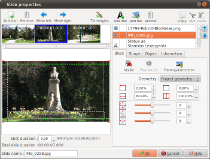
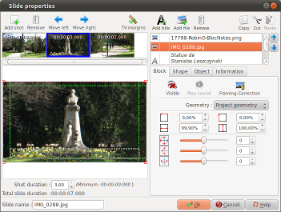
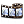
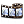
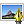
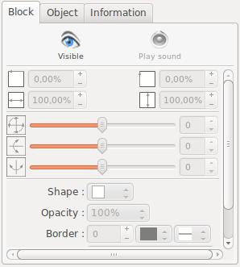
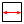

Introduction
The "Slide properties" dialog
allows you to define settings for the slides:

This dialog is called by double-clicking the assembly zone of a slide, in the timeline or by double-clicking the preview zone.

This dialog is called by double-clicking the assembly zone of a slide, in the timeline or by double-clicking the preview zone.
Description of the dialog
This dialog includes numerous
zones:
- Zones to the left correspond to settings for the slide and its shots
- Zones to the right correspond to settings for blocks
To the left, at the top: the shots zone
The shots zone consists of a toolbar and a timeline.
The shot toolbar

|
Append a shot to the end of the timeline |
 |
Remove current selected shot |
| Change the order of the shots by moving the current selected shot a step to the left | |
| Change the order of the shots by moving the current selected shot a step to the right |
Remark: It is also possible to change the shots order using Drag and Drop
The shot timeline
TThe shot timeline shows the
shots as thumbnails, in the order in which they will be
played (from left to right).
For each shot, the thumbnail shows:
For each shot, the thumbnail shows:
- The shot duration
- An image representing the shot at the end of its duration
The shot time setting zone
| Shot duration |
Indicate here the
duration for the current selected shot. For the last shot of the slide, there is a minimum duration. The following rules
are used to calculate the minimum duration of the
shot:
|
| Total slide duration |
The total slide
duration is displayed here. This duration takes into account possible adjustments for minimal duration of the shot as described above. |
| Name of the slide | Indicate here a name for the slide. It is this name which will appear on the thumbnail in the main window timeline. |
To the left, in the middle: the composition zone
The composition zone allows
you to move and interactively re-size blocks for the current
selected shot.
The blocks of the composition are shown with a frame (to differentiate them from graphical elements in the background).
The current selected block is shows with control handles (small squares appearing at the corners and borders).
With the mouse:
The blocks of the composition are shown with a frame (to differentiate them from graphical elements in the background).
The current selected block is shows with control handles (small squares appearing at the corners and borders).
With the mouse:
- To re-size the block, click one of the handles and drag the mouse with the mouse button down.
- To move the block, click the block and drag the mouse with the mouse button down.
With the keyboard:
- To move the block, use the arrow keys.
- To change the size of the block, use SHIFT+arrows to move the upper left corner handle or CTRL+arrows to move the lower right corner handle.
Double click on a block allows
to open the block editor associated with the block type (for
a text block: open the text editor. For an image block open
the reframing dialog, etc.)
To the right at the top: the block zone
The block zone consists of a toolbar and a block table.The block table
The block table lists, from
top to bottom, the current blocks in the slide.
Blocks are displayed over 3 columns:
Blocks are displayed over 3 columns:
- The first column indicates the type of block (
 =Title,
=Image, =Video)
=Title,
=Image, =Video) - The second column indicates the block which plays the
sound during the shot : a
 icon appears
for the block which has the sound
icon appears
for the block which has the sound - The third column indicates:
- The text of the block, if it is a title block
- The name of the file, if it is an image or video block
The active block is the
current selected block in the block table. To change the
active block, simply select a block in the list or in the
composition zone.
Double click on a block allows to open the block editor associated with the block type (for a text block: open the text editor. For an image block open the reframing dialog, etc.)
Remarks on blocks:
Double click on a block allows to open the block editor associated with the block type (for a text block: open the text editor. For an image block open the reframing dialog, etc.)
Remarks on blocks:
- Block order can change from one shot to another
- Hidden blocks are shown in greyscale and italics
The toolbar
| Change the order of blocks by moving the active block upward (towards the background) | ||
| Change the order of blocks by moving the active block downward (towards the foreground) | ||
 |
Add a new title block |
|
 |
Add one or several new
blocks of images or video. A file selection dialog
appears allowing you to select files. Note: in case of
multiple selection, files are added in the
alphabetical order of the filenames or in the digital
order of shots (according to the option selected in
the configuration dialog). |
|
|
Remove the current
block |
|
 |
Copy the current block
to the ffDiaporama clipboard. The copy is made with the block parameters defined for the current selected shot. |
|
 |
Copy the current block
to the ffDiaporama clipboard and remove it from the
slide The copy is made with the block parameters defined for the current selected shot. |
|
 |
Paste block from the ffDiaporama clipboard and insert it. | |
| Click this button to make the active block visible or hidden. Note: Hidden video blocks are automatically paused | ||
|
Click this button to give the sound, during this shot, to the current video block. (This button is active only for videos.) | |
| Click this button to
call the Edit text block
dialog. |
||
|  | Click this button to
call the Image framing and
correction dialog This button is active only for objects containing images or videos. |
|
 |
Click this button to
call the Cut video dialog This button is active only for objects containing videos. |
|
Remarks on blocks:
- All blocks, whether title, image or video, possess a
text element.
- During the insertion of a new block (Add title, Add file or Paste), the block is inserted:
- In visible mode for the current shot and for all the following shots
- In hidden mode for the shots located before the current shot
- Always in the last position in the list of blocks (in the foreground)
To the right below: the tab Block/Object tab
This tab allows you to set the size and the position of the
active block and its contents.|  | Represents
the horizontal position of the block from the left. This position is defined as a percentage (%) of the total width of the image or in pixels (for a 1080p screen) according to the unit defined in the configuration dialog. |
||
| Represents
the vertical position of the block from the top. This position is defined as a percentage (%) of the total height of the image or in pixels (for a 1080p screen) according to the unit defined in the configuration dialog. |
|||
|  | Represents
the with of the block. This value is defined as a percentage (%) of the total width of the image or in pixels (for a 1080p screen) according to the unit defined in the configuration dialog box. |
||
| Represents
the height of the block. This value is defined as a percentage (%) of the total height of the image or in pixels (for a 1080p screen) according to the unit defined in the configuration dialog. |
|||
| Rotation around the Z axis in degrees. | |||
| Rotation around the Y axis in degrees. | |||
| Rotation around the X axis in degrees. | |||
| Geometry | Allows
you to select the geometrical constraint to be applied
to the block. Three type of constraint are available:
|
||
| Shape |
Allows
you to select a shape for the block. The selected
shape will be used as:
|
||
| Opacity |
Opacity |
Defines the opacity of the block. This value also applies to the text of the block. | |
| Border |
Thickness
of the border |
Defines the thickness of the border (This value is defined as 1/1080 of the height of the screen. A value of 10 corresponds to 10 points on a 1920x1080 FullHD screen, but only to 6 points on a 1280x720 screen). | |
| Border
color |
Defines the color of the line to be used to draw the border | ||
| Line
type of border |
Defines the type of line (solid, dotted line, etc.) | ||
| Shadow |
Shadow
position |
Defines in which corner the shadow will be positioned (Note: the position of the shadow is independent of rotation of the block: the right lower corner is always the right lower corner, whatever rotation is applied). | |
| Distance of the shadow | Defines the distance between the block and its shadow | ||
| Color |
Shadow color |
||
To the right below: the tab Information
Display information on the block:- If the block is a title: show that it is a title
- If the block is an image: show the EXIF values contained in the image
- If the block is a video: show the information of size and format of the video
TV margins
Enable or disable rulers corresponding to the margins of
television sets.
- If the TV margins are enabled, rulers corresponding to
these margins and to the screen center are shown. The mouse
will be attracted towards these rulers.
This is valid both for block movements and for movements of the resizing handles. - In ffDiaporama, the TV margins are of type "Title safe
area" and are defined on 90% in width and 90% in height, for
all project geometries..
If required, this point can be improved in the future versions of the software!
See also
WIKIPEDIA |
Description of TV margins and overscan Description of EXIF - Exchangeable image file format |
ffDiaporama 1.1